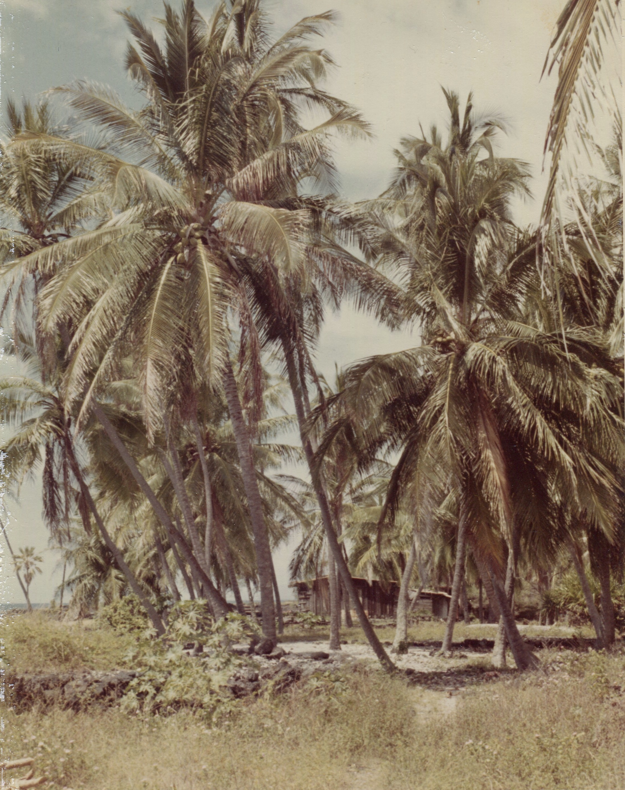
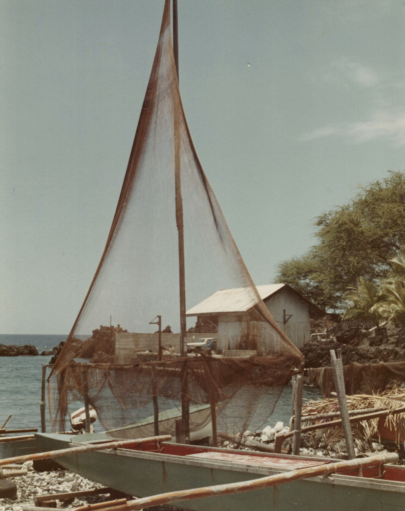
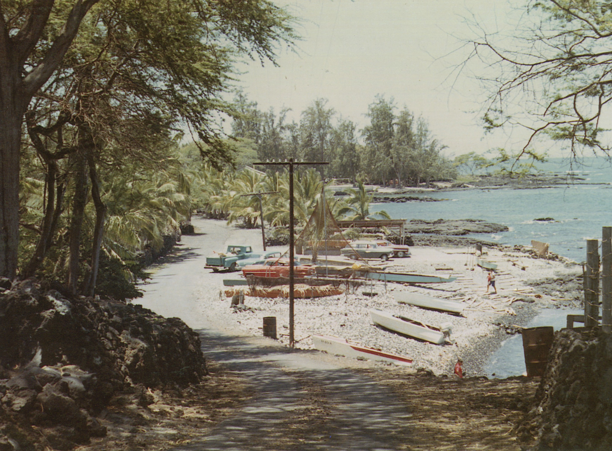
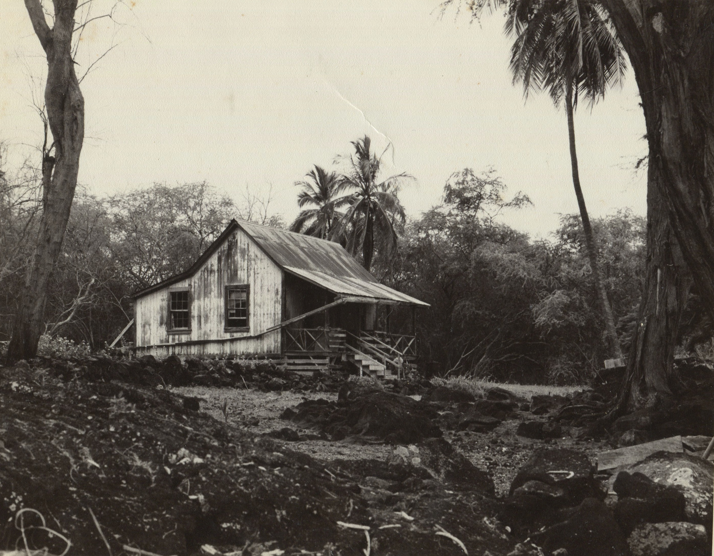
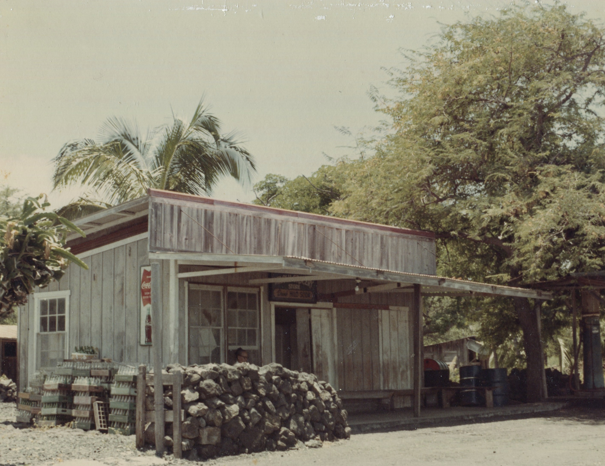
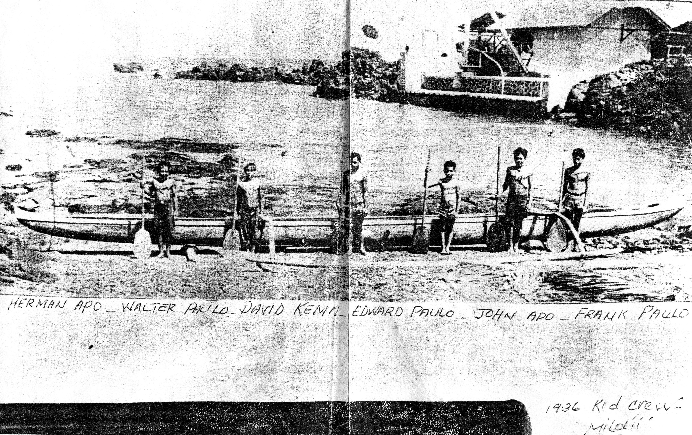
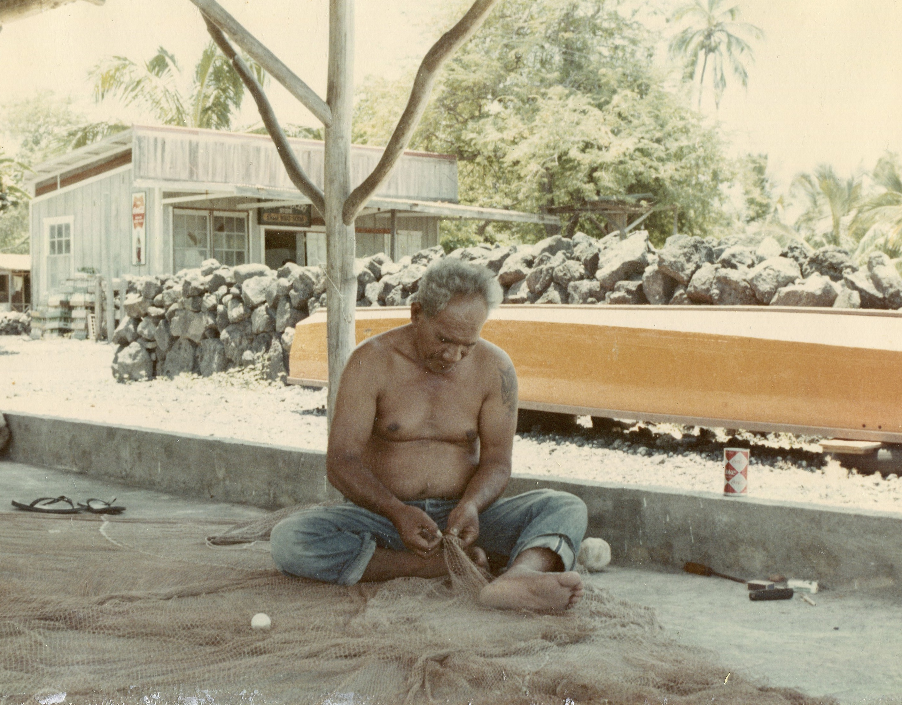
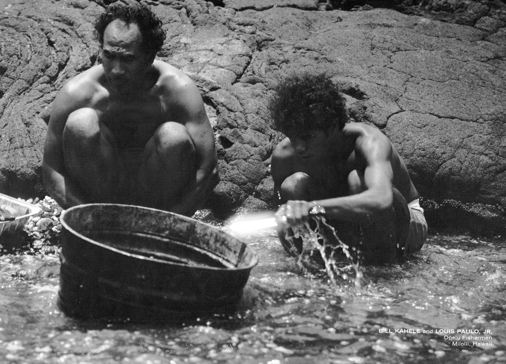

Miloliʻi Village
The story of the last fishing village in Hawaiʻi
The settlement at Miloliʻi in the South Kona District of Hawaiʻi Island remains the most traditional fishing village in Hawaiʻi. Established as a settlement dating back to the early Polynesian seafarers from the South Pacific, Miloliʻi families have been fishing the offshore and nearshore waters for generations. The village has about 200 residents and about 50 single-family homes. The majority of the residents are Native Hawaiian. Authorities differ on the meaning of Miloliʻi. Some translate it as “fine twist” in reference to the excellent sennit which was produced from the olonā bark to make fine cord and highly valued fishing nets. Others indicate that “Miloliʻi” means “small swirling,” a reference to the many ocean currents that flow past the village.[1]

The Miloli’i community lies in the shadow of its most dominant geologic feature, the vast southwest slope of the 13,000-foot Mauna Loa volcano. Eruptive lava flows from Mauna Loa have continually influenced the area. Since 1832, the volcano has erupted forty times. Eight flows have traversed the slopes into North and South Kona, and four reached the ocean (in 1859, 1919, 1926, and 1950). On April 18, 1926 the houses at the fishing village of Hoʻopūloa, adjacent to Miloliʻi were buried by lava from the Puʻu ʻO Keʻokeʻo vent of Mauna Loa. A few families moved to Miloliʻi and the others dispersed to higher elevations. Over the years, residents of Miloliʻi have continued to occupy the land. Their right to do so has never been questioned, but legal tenancy or ownership had never been conferred. In 1931 the territorial governor set aside the area as a public park under the control of the County government (Executive Order 473). Under the park provision the Governor gave the County full authority to create a “Hawaiian Village” at Miloliʻi. The County had the village subdivided into house lots in 1941. Requests were submitted to occupy the house lots between 1943 and 1954. While some of the house lots were awarded, residents never received title to them. In 1968 Governor Burns canceled Executive order No. 473 and the land reverted to the Department of Land and Natural Resources (DLNR), for what was intended to be a land swap with the Department of Hawaiian Homelands (DHHL). However, the exchange never took place, as DHHL did not have the legal means of directly leasing lands to Miloliʻi residents.
The present coastal village of Miloli’i is located on the relatively flat Kapalilua coastal plain. The three bays in the immediate area, Hoʻopūloa Bay, Miloliʻi Bay, and Omokaʻa Bay, offer little or no protection from ocean waves and surge. Shoreline features in the community include a black sand beach at Hoʻopūloa Bay; the broad, gently sloping lava flows extending into the sea between Hoʻopūloa Bay and Miloliʻi Bay; and the shallow and exposed lava platform reefs extending from Miloliʻi Bay to Omokaʻa Bay. The 1926 lava flow dominates the coastline on the Hoʻopūloa side of the community. The other flows date from prehistoric times.

Between 1973 and 1974 the state conducted a survey in the Miloliʻi area in an attempt to identify sites and structures for the “Hawaiʻi Register of Historic Places.” A number of churches and characteristic structures were identified.
In the village of Miloliʻi many of these still remain to this day:
- The Magoon House—a unique site from the area of a small wooden “Kona House” built in the late nineteenth century. Elvis Presley stayed in this house when he came to Miloliʻi in the 1950’s to film “Girls, Girls, Girls.”
- St. Peter’s Catholic Church—built in 1932 by Father Steffen to replace an earlier St. Peter’s church destroyed by the 1926 lava flow.
- Hauʻoli Kamanaʻo Congregational Church—this church was built in 1865 under the direction of the Rev. John D. Paris and exemplifies early missionary wood construction. It was made famous by the song “Lā ʻElima.”






